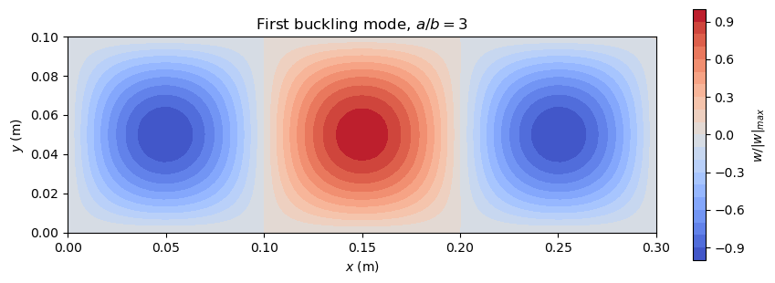

Linear buckling analysis#
The function lb solves the linear buckling eigenvalue problem
for the load multipliers \(\lambda\) and the buckling modes \(\boldsymbol{u}\), where \(\boldsymbol{K}\) is the linear stiffness matrix and \(\boldsymbol{K}_G\) the geometric stiffness matrix of a reference load: the critical load is \(\lambda_1\) times the reference load. This example verifies it on the column of rigid bars of Bathe (2014), Example 3.14, and calculates the critical load of a simply supported plate under uniaxial compression with a Ritz model, compared with the classical solution of Timoshenko and Woinowsky-Krieger (1959).
References.
Bathe, K.J., Finite Element Procedures, 2nd ed., K.J. Bathe, Watertown, MA, 2014.
Castro, S.G.P. and Donadon, M.V., Assembly of semi-analytical models to address linear buckling and vibration of stiffened composite panels with debonding defect, Composite Structures, 160, 232-247, 2017. https://doi.org/10.1016/j.compstruct.2016.10.026
Timoshenko, S. and Woinowsky-Krieger, S., Theory of Plates and Shells, 2nd ed., McGraw-Hill, New York, 1959.
[1]:
%matplotlib inline
import os
import sys
# the helper functions of the tests are imported from the folder tests/
sys.path.insert(0, os.path.join('..', 'tests'))
import numpy as np
import matplotlib.pyplot as plt
from scipy.sparse import block_diag, csc_matrix
from scipy.special import roots_legendre
from structsolve import lb
from ritz import isotropic_plate, vecf, vecf_xi
Column of two rigid bars#
The column of Bathe’s Example 3.14 is an assemblage of two rigid weightless bars of length \(L\), connected by frictionless pins, and springs whose stiffnesses are proportional to \(k\), under the axial load \(P\) at its free end. Its static equilibrium equations are (Bathe 2014, Example 3.14, p. 101)
with the critical load \(P_{cr} = -2 k L\) (compression negative). With \(P = \lambda P_0\), the reference load \(P_0 = -1\) and \(L = 1\), they are \((\boldsymbol{K} + \lambda \boldsymbol{K}_G) \boldsymbol{u} = \boldsymbol{0}\) with \(\boldsymbol{K}\) the matrix on the left and \(\boldsymbol{K}_G\) the matrix on the right, and \(\det(\boldsymbol{K} + \lambda \boldsymbol{K}_G) = (2 k - \lambda)(3 k - \lambda)\) gives the load multipliers \(\lambda = 2 k\), i.e. \(P_{cr}\), and \(3 k\).
The model below has five uncoupled copies of the column, with \(k = 1, 4, 16, 64, 256\), such that the sparse solver of lb computes the five lowest load multipliers of a model of ten degrees of freedom:
[2]:
k = 4.**np.arange(5)
K = block_diag([ki*np.array([[5., -2.], [-2., 2.]]) for ki in k])
KG = block_diag([np.array([[-2., 1.], [1., -1.]])]*5)
eigvals, eigvecs = lb(csc_matrix(K), csc_matrix(KG), silent=True,
num_eigvalues=5, sparse_solver=True)
ref = np.sort(np.concatenate((2*k, 3*k)))[:5]
print(f'{"mode":>4s} {"lambda (lb)":>14s} {"closed form":>12s} {"rel. diff.":>10s}')
for i in range(5):
print(f'{i+1:4d} {eigvals[i]:14.10f} {ref[i]:12.1f}'
f' {abs(eigvals[i] - ref[i])/ref[i]:10.1e}')
print()
print('critical load of the column k = 1: P_cr = lambda_1*P0 =',
eigvals[0]*(-1.), ', Bathe: -2 k L =', -2.)
mode lambda (lb) closed form rel. diff.
1 2.0000000000 2.0 1.3e-15
2 3.0000000000 3.0 8.9e-16
3 8.0000000000 8.0 3.3e-15
4 12.0000000000 12.0 1.5e-14
5 32.0000000000 32.0 3.6e-15
critical load of the column k = 1: P_cr = lambda_1*P0 = -2.0000000000000027 , Bathe: -2 k L = -2.0
Simply supported plate: Ritz model#
The plate of length \(a\) (along \(x\)), width \(b\) and thickness \(h\), of an isotropic material, is under the uniform compression \(N_{xx}\) (force per unit length, negative in compression). The first-order shear deformation theory (FSDT) describes it with the deflection \(w\) and the rotations \(\phi_x\), \(\phi_y\), with the curvatures and the transverse shear strains
The linear stiffness matrix comes from the strain energy \(\frac{1}{2} \int_A (\boldsymbol{\kappa}^\top \boldsymbol{D}
\boldsymbol{\kappa} + \boldsymbol{\gamma}^\top \boldsymbol{A}_s
\boldsymbol{\gamma}) \,\mathrm{d}A\), with the bending stiffnesses \(D_{ij}\) and the transverse shear stiffnesses \(A_{44}\), \(A_{45}\), \(A_{55}\), here with the shear correction factor 5/6 (isotropic_plate of tests/ritz.py). The geometric stiffness matrix comes from the work of the membrane force on the deflection, \(\frac{1}{2} \int_A N_{xx} w_{,x}^2 \,\mathrm{d}A\), for the reference load \(\hat{N}_{xx} = -100\) N/m.
Each field is a sum of products of functions of the natural coordinates \(\xi = 2x/a - 1\) and \(\eta = 2y/b - 1\), e.g. \(w = \sum_{i,j} c_{ij} f_i(\xi) g_j(\eta)\), with m1 terms in \(\xi\) and m2 terms in \(\eta\), N = 3 m1 m2 degrees of freedom. The functions are the hierarchical Legendre-based functions of Bardell, as in Castro and Donadon (2017), implemented with NumPy in vecf and vecf_xi of tests/ritz.py: the first four are cubic Hermite
functions, whose displacement and rotation at \(\xi = \pm 1\) are switched on or off by four flags, the following ones vanish with their first derivative at both ends. The deflection is null at the four edges and the rotations are free: the simply supported plate. The matrices are integrated with Gauss-Legendre quadrature. The function below is the model of the test test_lb_plate_buckling_fsdt of tests/test_linear_buckling.py, for any \(a\), \(b\), \(h\):
[3]:
def plate_matrices(a, b, h, E, nu, m1, m2, Nxxhat=-100.):
# K and KG of the simply supported FSDT plate, dofs [w, phix, phiy]
N = 3*m1*m2
pts1, weights1 = roots_legendre(2*m1 - 1)
pts2, weights2 = roots_legendre(2*m2 - 1)
# BCs: w simply supported (displacement flags 0), phi free
wxit1, wxir1, wxit2, wxir2 = 0, 1, 0, 1
wetat1, wetar1, wetat2, wetar2 = 0, 1, 0, 1
xit1, xir1, xit2, xir2 = 1, 1, 1, 1
etat1, etar1, etat2, etar2 = 1, 1, 1, 1
prop = isotropic_plate(thickness=h, E=E, nu=nu)
Sw_x = np.zeros(N)
Sw_y = np.zeros(N)
Sphix = np.zeros(N)
Sphiy = np.zeros(N)
Sphix_x = np.zeros(N)
Sphix_y = np.zeros(N)
Sphiy_x = np.zeros(N)
Sphiy_y = np.zeros(N)
buff = np.zeros((N, N))
K = np.zeros((N, N))
KG = np.zeros((N, N))
def addouter(matrix, vec1, vec2):
np.outer(vec1, vec2, out=buff)
matrix += buff
detJ = a*b/4
for xi, wxi in zip(pts1, weights1):
wPxi = vecf(m1, xi, wxit1, wxir1, wxit2, wxir2)
wPxi_xi = vecf_xi(m1, xi, wxit1, wxir1, wxit2, wxir2)
Pxi = vecf(m1, xi, xit1, xir1, xit2, xir2)
Pxi_xi = vecf_xi(m1, xi, xit1, xir1, xit2, xir2)
for eta, weta in zip(pts2, weights2):
wPeta = vecf(m2, eta, wetat1, wetar1, wetat2, wetar2)
wPeta_eta = vecf_xi(m2, eta, wetat1, wetar1, wetat2, wetar2)
Peta = vecf(m2, eta, etat1, etar1, etat2, etar2)
Peta_eta = vecf_xi(m2, eta, etat1, etar1, etat2, etar2)
weight = wxi*weta
Pi, Pj = np.meshgrid(Pxi, Peta, indexing='ij')
Sphix[m1*m2:2*m1*m2] = (Pi*Pj).flatten()
Sphiy[2*m1*m2:] = (Pi*Pj).flatten()
Pi_xi, Pj = np.meshgrid(wPxi_xi, wPeta, indexing='ij')
Sw_x[:m1*m2] = (Pi_xi*Pj*(2/a)).flatten()
Pi_xi, Pj = np.meshgrid(Pxi_xi, Peta, indexing='ij')
Sphix_x[m1*m2:2*m1*m2] = (Pi_xi*Pj*(2/a)).flatten()
Sphiy_x[2*m1*m2:] = (Pi_xi*Pj*(2/a)).flatten()
Pi, Pj_eta = np.meshgrid(wPxi, wPeta_eta, indexing='ij')
Sw_y[:m1*m2] = (Pi*Pj_eta*(2/b)).flatten()
Pi, Pj_eta = np.meshgrid(Pxi, Peta_eta, indexing='ij')
Sphix_y[m1*m2:2*m1*m2] = (Pi*Pj_eta*(2/b)).flatten()
Sphiy_y[2*m1*m2:] = (Pi*Pj_eta*(2/b)).flatten()
e1xx = Sphix_x
e1yy = Sphiy_y
e1xy = Sphix_y + Sphiy_x
g0yz = Sphiy + Sw_y
g0xz = Sphix + Sw_x
Mxx = prop.D11*e1xx + prop.D12*e1yy + prop.D16*e1xy
Myy = prop.D12*e1xx + prop.D22*e1yy + prop.D26*e1xy
Mxy = prop.D16*e1xx + prop.D26*e1yy + prop.D66*e1xy
Qy = prop.A44*g0yz + prop.A45*g0xz
Qx = prop.A45*g0yz + prop.A55*g0xz
addouter(K, detJ*weight*Mxx, e1xx)
addouter(K, detJ*weight*Myy, e1yy)
addouter(K, detJ*weight*Mxy, e1xy)
addouter(K, detJ*weight*Qy, g0yz)
addouter(K, detJ*weight*Qx, g0xz)
addouter(KG, detJ*weight*Nxxhat*Sw_x, Sw_x)
return csc_matrix(K), csc_matrix(KG)
def deflection(c, a, b, m1, m2, num=81):
# w(x, y) of the eigenvector c on a grid
xi = np.linspace(-1, 1, num)
eta = np.linspace(-1, 1, num)
f = vecf(m1, xi, 0, 1, 0, 1) # shape (m1, num)
g = vecf(m2, eta, 0, 1, 0, 1) # shape (m2, num)
C = c[:m1*m2].reshape(m1, m2)
w = f.T @ C @ g # w[i, j] at xi[i], eta[j]
x = (xi + 1)*a/2
y = (eta + 1)*b/2
return x, y, w
Classical solution#
For the simply supported plate under the uniform compression \(N_x\), the classical plate theory gives the critical load (Timoshenko and Woinowsky-Krieger 1959, Section 93, Eq. (227), p. 389)
minimized over the number \(m\) of half-waves along \(x\). For an integer \(a/b\), \(m = a/b\) and \((N_x)_{cr} = 4 \pi^2 D/b^2\). The FSDT of the Ritz model gives a slightly lower critical load, because of the transverse shear deformation, which the classical theory neglects.
[4]:
def Ncr_classical(a, b, h, E, nu):
D = E*h**3/(12*(1 - nu**2))
m = np.arange(1, 20)
N = np.pi**2*D/b**2*(m*b/a + a/(m*b))**2
return N.min(), m[N.argmin()]
Critical loads#
The steel plate of the test, \(b = 0.1\) m, \(h = 0.003\) m, \(E = 200\) GPa, \(\nu = 0.3\), with m1 = 20 and m2 = 10 terms, for several aspect ratios \(a/b\), including the plate of the test, \(a = 0.3\) m. The critical load is \(N_{cr} = \lambda_1 |\hat{N}_{xx}|\); the number of half-waves of the buckling mode is counted from the sign changes of \(w\) along the line \(y = b/2\):
[5]:
E = 200.e9
nu = 0.3
b, h = 0.1, 0.003
m1, m2 = 20, 10
Nxxhat = -100.
results = []
for a_b in [1., 1.5, 2., 3.]:
a = a_b*b
K, KG = plate_matrices(a, b, h, E, nu, m1, m2, Nxxhat=Nxxhat)
eigvals, eigvecs = lb(K, KG, silent=True)
Ncr = eigvals[0]*abs(Nxxhat)
x, y, w = deflection(eigvecs[:, 0].real, a, b, m1, m2)
wc = w[:, w.shape[1]//2]
wc = wc[np.abs(wc) > 1e-8*np.abs(wc).max()]
m_ritz = np.count_nonzero(np.diff(np.sign(wc))) + 1
Nref, m_ref = Ncr_classical(a, b, h, E, nu)
results.append((a_b, Ncr, m_ritz, Nref, m_ref, (a, eigvecs[:, 0].real)))
print(f'{"a/b":>4s} {"N_cr Ritz FSDT":>15s} {"m":>3s} {"Eq. (227)":>12s}'
f' {"m":>3s} {"rel. diff.":>10s} (N/m)')
for a_b, Ncr, m_ritz, Nref, m_ref, _ in results:
print(f'{a_b:4.1f} {Ncr:15.1f} {m_ritz:3d} {Nref:12.1f} {m_ref:3d}'
f' {(Ncr - Nref)/Nref:10.2e}')
a/b N_cr Ritz FSDT m Eq. (227) m rel. diff. (N/m)
1.0 1899719.4 1 1952229.4 1 -2.69e-02
1.5 2069319.6 2 2118304.5 2 -2.31e-02
2.0 1912480.5 2 1952229.4 2 -2.04e-02
3.0 1917554.2 3 1952229.4 3 -1.78e-02
The Ritz model gives the number of half-waves of Eq. (227), and critical loads between 1.8 % and 2.7 % lower than the classical ones, as expected from the transverse shear deformation of the FSDT. These values are those of m1 = 20 and m2 = 10 terms, the model of the test. The buckling mode of the plate of the test, \(a/b = 3\), has three half-waves along \(x\):
[6]:
a, c = results[-1][-1]
x, y, w = deflection(c, a, b, m1, m2)
w = w/np.abs(w).max()
fig, ax = plt.subplots(figsize=(9, 3.2))
cs = ax.contourf(x, y, w.T, levels=21, cmap='coolwarm')
fig.colorbar(cs, ax=ax, label='$w/|w|_{max}$')
ax.set_aspect('equal')
ax.set_xlabel('$x$ (m)')
ax.set_ylabel('$y$ (m)')
ax.set_title('First buckling mode, $a/b = 3$')
plt.tight_layout()
plt.show()
